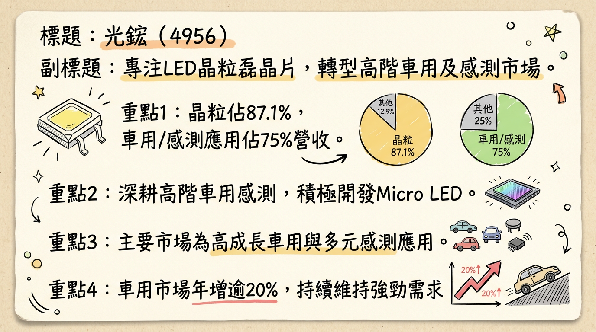
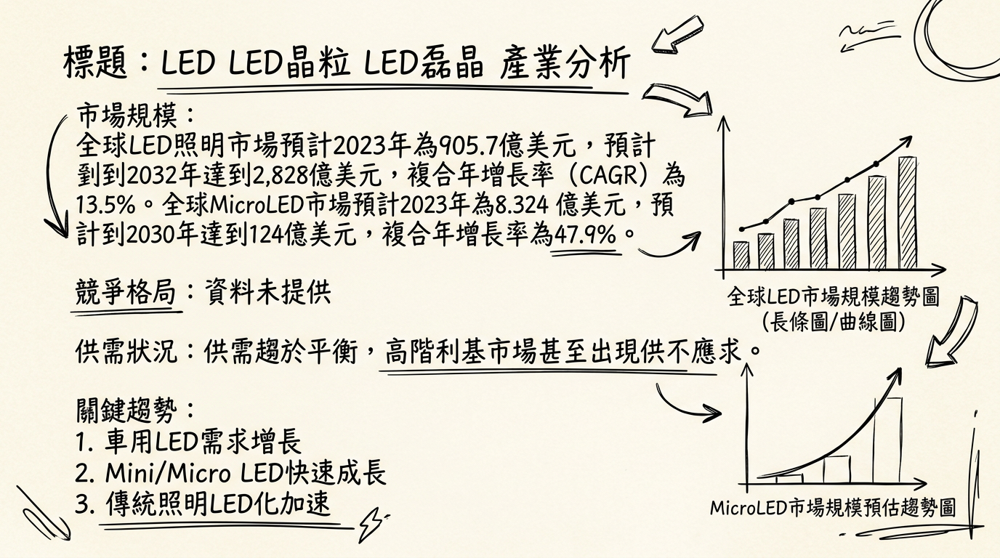
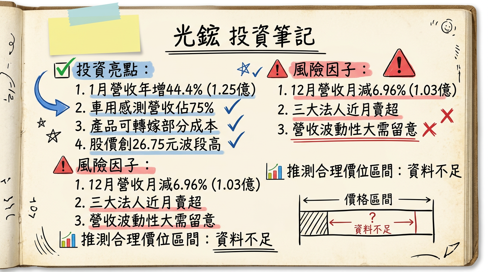

4956 光鋐 深度研究報告
一句話摘要
光鋐正積極轉型深耕高階車用與感測利基型LED市場，已佔營收75%，並佈局Micro LED。儘管面臨原物料供應限制與短期獲利承壓，公司期望透過產品結構優化及新技術開發，推動2026年營運優於2025年。
公司概覽
光鋐科技（4956）是一家專注於LED晶粒及磊晶片的研發、設計、製造與銷售的台灣公司。公司主要產品涵蓋超高亮度藍綠光磊晶片及晶粒、紅黃橙光磊晶片及晶粒，以及超高亮度發光二極體封裝模組及相關應用產品。近年來，光鋐積極進行業務轉型，將重心放在高階車用及感測利基市場，同時也投入Micro LED等高毛利產品的開發。公司的磊晶片到晶片生產皆在台灣本地進行。
營收結構 (截至 2025年11月18日法說會資訊)
| 業務類別 | 佔營收比重 |
|---|
| 車用與感測應用 | 約 75% |
| 晶粒 | 約 87.1% |
| 其他營運事業部 | 約 13% |
核心競爭優勢
聚焦高階利基市場：公司成功將車用與感測應用佔營收比重提升至約75%，顯示其深耕高毛利、高技術門檻利基市場的策略奏效，有助於擺脫低階LED紅海競爭。
新技術研發投入：積極開發Mini/Micro LED等高階產品，並與國內大廠如群創合作，展現公司在下一代顯示技術領域的佈局能力。
台灣在地製造優勢：磊晶片到晶片生產皆在台灣本地進行，有助於確保產品品質、縮短交期，並在全球供應鏈重組趨勢下，提升客戶對供應穩定性的信心。
客製化與高可靠度經驗：在高階車用及感測應用領域，產品對可靠性及客製化程度要求極高，光鋐累積的經驗與技術能力成為其進入門檻。
財務分析
月營收趨勢 (新台幣千元)
| 月份 (年) | 金額 (千元) | 月增率 MoM | 年增率 YoY |
|---|
| 2026年02月 | 95,245 | -23.54% | -6.18% |
| 2026年01月 | 124,577 | 20.70% | 44.40% |
| 2025年12月 | 103,205 | -6.96% | -8.93% |
| 2025年11月 | 110,929 | 3.83% | -2.74% |
| 2025年10月 | 106,837 | -12.57% | 5.12% |
| 2025年09月 | 122,200 | -3.31% | -1.71% |
：2026年1月營收表現亮眼，創近5個月新高，但2月營收呈現月減與年減。
季度數據
* 季營收: 3.6786億元 (季增5.94%，年增2.52%)
* 毛利率: 3.22%
* 營業利益率: -9.21%
* EPS: -0.04元
- 2025年第四季：詳細財務數據預計於2026年3月6日董事會後公告，目前尚未正式公布。
全年度營收與 EPS
- 2024年實際：全年EPS: -0.21元
- 2025年實際：
* 全年營收: 13.49億元 (年增4.19%)
* 全年EPS: 截至2025年第三季累計EPS為-1.03元，第四季數據待公布後方能確認全年實際EPS。
法說會重點 (2025年11月18日)
- 核心策略：未來營運持續聚焦感測 (Sensing) 與車用 (Automotive) 兩大核心應用領域，合計佔營收比重已高達75%。新產品開發與技術延伸將集中於此兩大領域，以期能快速轉換為實際營收貢獻。
- 車用市場：銷售對象主要為中國大陸以外客戶，訂單呈現穩定上升趨勢，有助於營運穩健成長。
- 感測應用：持續開發自動化及生物感測等新興應用，並看好相關人體監測領域的發展前景。
- Micro LED：與國內大廠如群創合作開發Micro LED等高毛利產品，鎖定技術獨特性，做穩利基型市場。
- 成本與供應鏈：
* 面對中國限縮關鍵材料供應及金價暴漲導致的成本壓力，公司已將部分成本反映在售價上。
* 持續向中國申請基板供應，同時搭配非中國高成本基板應急，雖然短期內影響約10%營收，但也讓部分同業訂單轉向光鋐。
- 營運展望：若美中貿易戰對材料管制逐步和緩，伴隨第三季匯損已見緩解，管理層預期2026年營運可望優於2025年。
- 產能利用率：受原物料供應受限影響，產能利用率僅約五成左右。
- 資本支出：法說會中未提供2025-2026年的具體資本支出金額或產能利用率數據。
券商觀點
目前尚未有2025-2026年針對光鋐的券商目標價、評等及EPS預估的公開資訊。
財報深度分析
利潤率趨勢 (%)
| 季度 | 毛利率 (%) | 營業利益率 (%) | 稅後淨利率 (%) |
|---|
| 2025年Q3 | 3.22 | -6.23 | -1.12 |
| 2025年Q2 | -0.70 | -13.19 | -22.25 |
| 2025年Q1 | 4.54 | -8.29 | -7.02 |
| 2024年Q4 | 9.46 | -5.77 | -3.01 |
| 2024年Q3 | 14.32 | 0.51 | -0.12 |
| 2024年Q2 | 15.97 | 0.33 | 0.63 |
| 2024年Q1 | 3.57 | -13.14 | -4.83 |
：
- 產品組合轉型：儘管公司積極轉型高階車用與感測市場，但新產品的效益可能尚未完全體現或受到其他因素影響。
- 成本壓力：2025年毛利率從2024年同期的14%大幅下滑至3%，主要受中國限縮關鍵材料供應及金價暴漲的成本壓力影響。公司雖已部分轉嫁成本，但仍難完全抵銷。
- 業外因素：業外收支對淨利潤影響顯著，如2025年Q3因匯兌利益約1,600萬元使單季虧損收斂，而Q2則因匯損導致業外虧損約3,500萬元。累計2025年前三季業外匯損約1,400萬元，侵蝕獲利。
- 產能利用率：受限於原物料供應，產能利用率僅五成，亦影響單位成本與整體毛利率表現。
存貨與營運分析
* 2025年Q3: 127.24天
* 2025年Q2: 129.22天
* 2025年Q1: 147.33天
* 2024年Q4: 146.38天
從2024年Q4到2025年Q3，存貨週轉天數呈現下降趨勢，顯示存貨去化速度加快，營運效率有所改善。
* 2025年Q3: 151.96天
* 2025年Q2: 157.91天
* 2025年Q1: 185.19天
* 2024年Q4: 180.90天
應收帳款收現天數在2025年Q1達到高峰後下降，表示收款能力有所改善。
- 存貨異常：綜合週轉天數下降趨勢，目前未有明確資訊顯示存貨異常堆積或備料現象。
資本支出與折舊攤銷
- 資本支出：2025年Q3的資本支出為-35,460仟元 (投資現金流)，反映該季度可能處分部分資產。未找到2024-2026年具體年度資本支出金額及趨勢。
- 折舊攤銷：2025年Q3折舊為53,029仟元，攤銷為371仟元。
其他財報重點
- 負債比率：2025年Q3為40.65%，較年初及去年同期略有上升，財務結構仍屬穩健範圍。
- 自由現金流量：2025年Q3為874仟元，前9個月累積每股自由現金流為-0.16元。
- 業外收支：匯率波動是業外收支的重要影響因素，2025年前三季累計仍有約1,400萬元的匯兌損失。
股權異動
- 董監事/大股東申報轉讓：近期（2024年以後）未找到公開紀錄。最近一筆為2018年。
- 庫藏股買回：2024-2026年未找到買回紀錄。
- 可轉換公司債(CB)：2024-2026年未找到發行紀錄。
- 現金增資或減資：2024-2026年未找到相關計畫。
- 股利政策：2024年股利為0.0元，2025年度目前亦無股利發放資訊。最近一次發放股利為2022年的現金股利0.40元。
產業分析
產業數據
全球LED市場規模與CAGR成長率
* 全球LED照明市場：預計2024年達964.8億美元，2024-2030年CAGR 10.6%，2030年達1,768.9億美元。另有報告預估2023年905.7億美元，2024-2032年CAGR 13.5%，2032年達2,828億美元。
* MicroLED市場：2023年約8.324億美元，預計2030年達124億美元，複合年增長率高達47.9%。
供需狀況
* 整體LED市場：經歷庫存調整後，供需趨於平衡，新興應用帶動增長。
* 高階利基市場：車用、高功率、感測、Mini/Micro LED等領域因技術門檻高，供需較為緊俏，廠商擁有較高議價能力。
產業平均毛利率水準
* 一般照明LED：競爭激烈，毛利率通常在20%以下。
* 高階利基市場：技術含量高、驗證週期長，毛利率通常可達30%以上，甚至更高。光鋐轉向此類市場有助於提升平均毛利率。
競爭格局
全球主要LED公司及其影響力
| 公司名稱 | 業務重點/主要產品線 | 概略市佔率 (或影響力) |
|---|
| ams-OSRAM (奧地利) | 車用、特殊照明、感測器、MicroLED | 高階車用與特殊應用領域的領導者 |
| Nichia (日亞化學) | LED晶粒、雷射二極體，高階照明、車用、顯示 | 高品質、高亮度LED晶粒的主要供應商 |
| Samsung LED (韓國) | 各類LED封裝、模組，顯示器、照明、車用 | 消費性電子、顯示器、照明市場重要參與者 |
| Lumileds (美國) | 車用照明、普通照明、特殊照明應用 | 車用、高功率照明領域的強大競爭者 |
| Seoul Semiconductor (韓國) | 通用照明、車用、背光LED、UV LED、WICOP技術 | 多元化LED應用，技術創新者 |
| Cree LED (美國) | 高功率LED、車用、戶外照明、體育場照明 | 高功率LED市場的領導者 |
| 國巨(KEMET/YAGEO) | 台灣被動元件大廠，在感測、車用元件領域有布局 | 被動元件領導者，感測元件市場具影響力 |
| 維度 | 4956 光鋐 | 主要競爭對手 (如 ams-OSRAM, Nichia, Lumileds) |
|---|
| 技術 | 專注高階藍綠光/紅黃橙光磊晶片及晶粒、IR感測、車用LED、積極開發Mini/Micro LED。 | 技術積累深厚，專利佈局廣泛，在高可靠度、高亮度、客製化車用及Micro LED領先。 |
| 產能 | 台灣本地生產，中小型規模，專注利基市場。 | 龐大且多元的生產基地和產能，具規模經濟優勢。 |
| 客戶 | 國際一線車用供應鏈或相關感測模組廠商，要求高品質與可靠性。 | 服務全球各大車廠、照明品牌、消費性電子巨頭等廣泛客戶。 |
| 價格 | 高階利基市場，產品有較高溢價空間，透過客製化、高可靠度爭取訂單。 | 高階市場採價值導向定價，但在某些標準品領域可能面臨價格壓力。 |
| 公司代號 | 公司名稱 | 營收規模 (2024年，新台幣億元) | 毛利率 (2024年，%) | EPS (2024年，新台幣元) | 備註 |
|---|
| 4956 | 光鋐 | 未找到 2024 年完整數據 | 未找到 2024 年數據 | 未找到 2024 年數據 | 轉型高階利基市場 |
| 3714 | 富采 | 未找到 2024 年完整數據 | 未找到 2024 年數據 | 未找到 2024 年數據 | 晶電與隆達合組，LED晶粒與封裝 |
| 2340 | 光磊 | 未找到 2024 年完整數據 | 未找到 2024 年數據 | 未找到 2024 年數據 | 專注感測元件、發光二極體 |
| 2393 | 億光 | 未找到 2024 年完整數據 | 未找到 2024 年數據 | 未找到 2024 年數據 | LED封裝、模組，應用廣泛 |
：光鋐轉型高階利基市場的策略，預期將使其毛利率表現優於傳統照明LED廠商。
產業趨勢
Mini/Micro LED技術的發展與應用普及
* 具體影響：提升LED產業價值，帶來新的成長曲線，尤其在高階消費電子、車用顯示等領域，但仍面臨巨量轉移、良率、成本等製程挑戰。
車用照明與感測應用持續成長
* 具體影響：電動車和智能汽車發展帶動車用LED市場規模擴大，要求高可靠性、客製化產品，供應鏈整合有利具認證能力的廠商。
AI與物聯網 (IoT) 帶動LED感測與特殊應用
* 具體影響：LED產品應用多元化至感測、健康、智慧城市等，技術與光學、電子、通訊、AI融合，開啟新興市場潛力。
對光鋐的具體機會和威脅
- 機會：深耕高階車用與感測市場符合趨勢；Micro LED開發潛力；台灣在地製造優勢；IR感測應用擴大。
- 威脅：國際大廠的資金、技術、專利、客戶關係競爭壓力；Micro LED量產挑戰與市場普及速度；宏觀經濟波動；新技術迭代風險。
相關投資題材的具體連結
- 電動車 (EV) / 自駕車：車用LED照明與IR感測元件需求爆發。
- AI (人工智慧)：邊緣運算及智慧感測應用，對IR LED等光感測元件需求增加。
- Mini/Micro LED顯示器：高階顯示器對高性能LED晶粒需求提升。
- 物聯網 (IoT) / 智慧家庭：IoT設備需大量感測器，IR LED應用於智慧門鎖、家電、安防監控。
近期催化劑
*
2026年02月05日：1月營收新台幣1.25億元，月增20.71%，年增44.4%，創近5個月新高。
* 2026年02月06日：股價受車用感測題材發酵，盤中一度急漲逾6%，最高達26.75元。
* 2025年11月18日法說會：管理層預期2026年營運優於2025年，車用與感測佔營收比重達75%。
* 2025年09月05日：8月營收達1.26億元，月增5.97%、年增14.5%，創15個月新高。
*
2026年03月05日：2月營收新台幣9524.5萬元，月減23.54%，年減6.19%。
* 2026年01月05日：2025年12月營收新台幣1.03億元，月減6.96%，年減8.94%，為2025年3月以來新低。
* 2025年12月17日 (法說會備忘錄)：2025年Q3毛利率大幅下滑至3%，前三季累計EPS為-1.04元。
* 供應鏈挑戰：中國對關鍵基板材料的限制，及金價暴漲導致成本壓力，產能利用率僅五成，短期影響約10%營收。
* 法人動向：2026年2月2日以來至2026年3月3日，外資合計賣超499張，三大法人合計賣超473張。
⭐ 成長動能時間軸
- 擴廠計畫：目前未找到明確的擴廠計畫公開資訊。
- 新客戶/新市場 (2025年及未來)：
*
車用市場：主要鎖定中國大陸以外客戶，訂單穩定上升。
* 感測應用：持續開發自動化、生物感測及人體監測等新興應用。
- 資本支出：未找到明確的資本支出增加計畫。
- 產能 (2025年)：因原物料供應限制，產能利用率僅約五成。公司正積極申請中國基板供應並搭配非中國高成本基板應急，以維持產能與生產。
- 需求面 (2025年及未來)：
*
下游車用需求：電動車與智慧汽車的發展帶動車用顯示器與照明升級需求顯著，如指示燈、煞車燈、氛圍燈，年成長幅度持續維持20%以上。
* 下游感測需求：穿戴裝置、監控系統、車內監控等需要廣泛波長（UV至IR）的多樣化光源。
- 新產品 (2025年及未來)：與群創等大廠合作開發Micro LED技術，鎖定高利潤利基型市場。
2026 展望
成長動能
高階利基市場深耕：車用與感測應用佔營收比重達75%，符合產業高值化趨勢，在電動車、智能車及AIoT發展帶動下，有望持續貢獻穩定訂單及較高毛利。
Micro LED潛力：與國內大廠合作開發Micro LED技術，若能成功切入供應鏈並量產，將為公司開闢新的高成長與高毛利市場。
供應鏈重組受益：部分同業因供應鏈問題導致訂單轉向光鋐，顯示公司在特定領域的競爭韌性。
管理層樂觀指引：管理層預期2026年營運可望優於2025年，顯示公司對轉型成果抱持信心。
風險因子
原物料供應限制與成本壓力：中國對關鍵基板材料的嚴密管制，以及金價飆漲，導致產能利用率受限於五成，並推高成本，可能持續影響約10%營收及毛利率。
產業競爭與毛利率挑戰：儘管轉型利基市場，但高階LED領域仍面臨國際大廠的激烈競爭，毛利率能否顯著改善並維持穩定仍是挑戰 (2025Q3毛利率僅3%)。
持續虧損與財務結構壓力：公司自2022年以來持續虧損，2025年前三季累計虧損約1億元，可能對公司長期發展與營運擴張基礎造成壓力。
Micro LED量產不確定性：Micro LED技術的量產時程、良率及成本控制仍是業界難題，可能影響其對營收獲利的實際貢獻速度。
總體經濟與匯率波動：全球經濟放緩、美中貿易戰的潛在影響，以及匯率波動（2025年前三季累計業外匯損1,400萬元），都為公司營運帶來不確定性。
投資結論
轉型方向正確，但獲利仍具挑戰：光鋐將業務重心轉向高階車用與感測利基市場是正確的戰略選擇，符合LED產業高值化趨勢。然而，近期毛利率大幅下滑，加上原物料供應限制導致產能受限，顯示公司在營收成長的同時，獲利能力仍面臨嚴峻挑戰，需要時間來消化成本壓力並提升產能利用率。
車用與感測為短期成長引擎，Micro LED 為長期催化劑：車用與感測應用已佔公司營收達75%，受惠於電動車、智慧汽車及AIoT的強勁需求，預計將是未來1-2年的主要成長動能。與國內大廠合作開發Micro LED，則為公司在下一代顯示技術領域奠定基礎，具備長期成長潛力。
關注供應鏈瓶頸與成本控制：中國基板材料的供應限制是當前影響公司營運的關鍵因素，其解決進度將直接影響產能利用率與營收表現。公司如何有效應對金價飆漲，將部分成本轉嫁給客戶，並確保關鍵材料的穩定供應，是評估其未來營運的重要指標。
財務體質待觀察，業外影響顯著：公司近期持續呈現虧損，雖有存貨去化與應收帳款收款天數改善的正面跡象，但整體財務結構仍需持續觀察。業外收支（尤其是匯率）對淨利潤的影響顯著，未來需關注其波動性。
投資建議：區間操作，目標價區間為 28-32 元。 考量光鋐轉型高階利基市場的潛力與 Micro LED 的長期發展，以及管理層對2026年營運優於2025年的樂觀預期，股價具備一定的成長想像空間。然而，鑒於公司短期仍面臨原物料供應瓶頸、毛利率偏低及持續虧損的挑戰，建議投資者採取區間操作策略。若公司能有效解決供應鏈問題並持續改善毛利率，目標價有望朝向 28-32元 區間邁進。投資人應密切追蹤後續財報，尤其是毛利率及管理層對供應鏈瓶頸解決進度的說明。
本報告由 AI 自動產生，資料來源為公開網路資訊，僅供參考，不構成投資建議。產生時間：2026-03-06 15:06
📊 資訊卡


